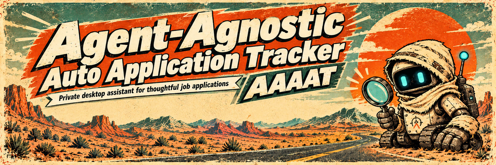
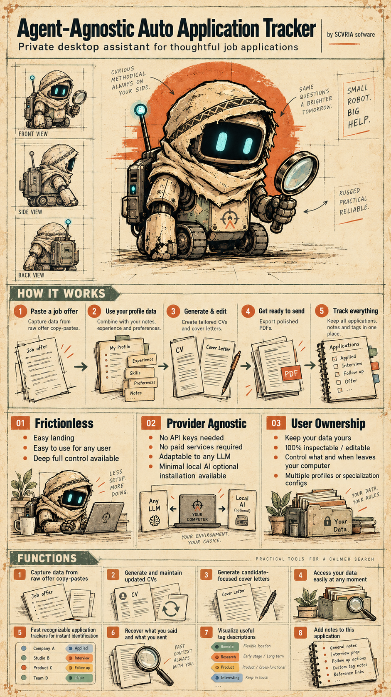

The product vision
What AAAAT is meant to do, who it serves and the boundaries it keeps.
Read the Product Definition →
Behind AAAAT
AAAAT is an open-source job-application tool. Building it is also an experiment: how far can one person develop a useful, understandable product with AI agents taking on substantial engineering work?

AI agents don't just finish sentences in an editor. They investigate problems, propose and implement changes, review work, help with documentation and sometimes challenge earlier solutions. This is a substantial part of AAAAT's engineering.
One human developer directs the project: deciding what AAAAT should be, which problems are worth solving, whether the experience actually helps people, and what work is good enough to release.
Because the process is interesting, and because AI-led development should be open to scrutiny. The repository contains instructions, product decisions, code changes, discussions and corrections. Anyone can look at what was proposed and how it changed.
AI also makes mistakes. Work that looks convincing may miss the intended user experience. AAAAT has had approaches revised or discarded when they didn't serve the product. The experiment is about producing a better tool with human direction—not pretending that AI always gets it right.
What AAAAT is meant to do, who it serves and the boundaries it keeps.
Read the Product Definition →The public guidance that tells agents what to read and how to respect the owner's decisions.
Read AGENTS.md →Explore the source code, proposals, discussions and merged changes.
Source code → Pull requests →AAAAT is free to use and inspect, and its users keep their own work and documents. It's a personal project developed by one person with AI assistance—not a large company or a managed job-application service.
Useful feedback and contributions are welcome. If you report an issue, please use fictional examples rather than uploading private application information.